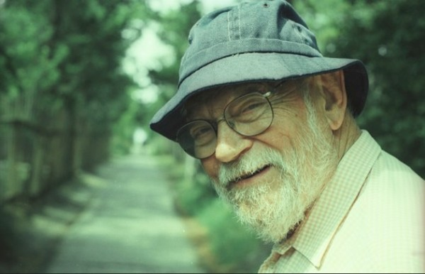

-
Amos Vogel: Life as a Subversive Art
by Ed Halter April 26, 2012
Editor’s note: Amos Vogel — founder of Cinema 16 and the New York Film Festival, author of Film as a Subversive Art, and one of the most titanically important cineastes of all time — died on Tuesday at age 91. The following essay by Ed Halter was originally commissioned for the Vienna International Film Festival’s “Tribute to Amos Vogel” in 2004 and previously published only in German. Here, Halter stresses the importance of Vogel’s political commitments to the programming at Cinema 16 and beyond.
“The more I stir up audiences, the happier I am”
- Amos VogelIt has become unfashionable to see history as the work of great individuals, but perhaps in the somewhat smaller world of cinema, one might be forgiven the conceit. For it is clear that the development of independent cinema in the US, and the art of cinema internationally, would have gone quite differently were it not for the enormous contributions of Amos Vogel.
An Austrian immigrant to the United States who arrived in America more than half a century ago, Vogel founded Cinema 16, which was very likely the most popular and influential film society in history. Vogel also began the New York Film Festival and laid the groundwork for New York’s Film Society of Lincoln Center, taught generations of cineastes as a professor, and penned an important body of writings on film, including his landmark study Film as a Subversive Art. By his own example, Vogel demonstrated that programming cinema could be a way of life that leads, through passion, into the unknown; that a commitment to revolution in art should be married to the same devotion to the defense of human rights in the political and social sphere; and that cinema can be a deployed as a force for subversion, in the most progressive and enlightening sense possible.
* * *
The circumstances of Vogel’s early years taught him that freedom was not something to take for granted – whether the intellectual freedom of uncensored art and ideas, or even the basic freedoms of human life. He was born Amos Vogelbaum on April 18, 1921 to an upper middle class family of assimilated Jews. His father was a lawyer; his mother was a kindergarten teacher who had worked with Alfred Adler (pioneer in the field of individual psychology and co-founder, with Freud, of the Institute for Psychoanalytic Study) and helped open the first kindergarten in Vienna following the chaos of World War One. He credits his parents with instilling in him an early sense of political consciousness. He attended the Piaristen Gymnasium where, he reported in a speech at the 1993 Viennale’s “Symposium on Austrian Film Professionals in Exile,” that he “was not an extraordinary student, except for German language and literature. I grew up among the works of Goethe, Brecht, Shakespeare, Dreiser, Tucholsky, Marx, Dos Passos, Upton Sinclair and Sinclair Lewis, Heine, Büchner, Edgar Wallace and Karl May.”
His exposure to the possibilities of the art of the moving image came early in life. As a small child, he was given a magic lantern as a toy – a kind of early slide projector, now seen as a 19th century cinematic precursor, which had survived into the 20th century as a juvenile plaything. When Vogel was 10, his father brought home a French-made 9.5mm film projector. His father shot and shared family movies, and Amos learned how to project a collection of cartoons and silent shorts. “I enjoyed running the comedies backward as well,” he told film scholar Scott MacDonald in 1983, remembering this as among his first experiences in “the magic of transforming, subverting reality.”
Serious cinema-going began at a rather early age as well. By age 12, Vogel was already attending screenings at a Viennese film society held at the Urania. Two films seen there which he has frequently cited as making a lasting impression on his consciousness were masterpieces of the poetic documentary: John Grierson’s portrait of India Song of Ceylon, and Night Mail, the lyrical look at the British mail system created collaboratively by W.H. Auden, Calvacanti, Basil Wright, Harry Watt and Benjamin Britten. In early adolescence, Vogel took a class on film-making offered at his school. It was around this time that the Austrian Civil War broke, and after the institution of Dollfuss’s government in May 1934, the beginnings of a new, oppressive conservatism. Vogel recalls “surreptitiously” reading censored leftist journals like Die Neue Welbühne, and was even given detention by his school for discussing socialism with a classmate. Of course, this was only the beginning of worse events to come. In 1938, he and other Austrian Jews were expelled from school. Despite (or because of) this repressive climate, Vogel became involved with a Socialist-Zionist youth group as a teenager (later in life, Vogel would reject the anti-Arab strain which developed within Zionism). Many of its members emigrated to Palestine, but Vogel was not allowed to do so, being a few months older than the cut-off point for youth emigration permits.
Instead, thanks to an uncle living in the United States, Vogel and his parents obtained visas and left for America, finally arriving there in 1939. But Vogel recalls that America did not live up to its myth of all-embracing immigrant melting-pot and universal freedoms. His immediate family squeezed in under a strict quota of Polish immigrants (his father was born in Poland), while much of his extended family, who could not come, remained behind and were later killed in the war. “I did not find in America the world I had expected,” Vogel told The Village Voice in 1961. “In Vienna they had signs reading ‘No Dogs or Jews.’ Down in Georgia where I went to school the signs read ‘No Dogs or Negroes.’ This was deeply shocking to me.” Eventually settling in New York, Vogel worked a variety of jobs and then obtained a degree in Economics and Political Science from the New School for Social Research, as part of its “University in Exile” program, which hired European faculty who had likewise fled totalitarian regimes. Around this time, Vogel met Marcia Diener; they married in 1945, on the day that the US dropped the atomic bomb on Hiroshima. The Vogels recall leaving the synagogue after their wedding to see the headlines in the newspapers on the street.
Cinema 16
In 1947, Amos and Marcia Vogel attended a program of films by Maya Deren at the Provincetown Playhouse in Greenwich Village. At this time, there were no regular venues for showing contemporary avant-garde film; Deren had rented out the Playhouse herself. Inspired by Deren’s screening, Marcia and Amos, along with a number of their friends, decided to lease out the Playhouse as well, and rent short films from local distributors. Their first screening was an enormous success—so much, that it was repeated sixteen evenings, with two shows per night. In an era when movie theaters screened Hollywood product exclusively, and television was only in its infancy, the Vogels quickly realized that they had stumbled upon a heretofore untapped desire for new and exciting moving images. Before long, they were booking further shows, but found that unpredictable ticket sales, coupled with the frustrations posed by the New York State Censorship Board — who forbid them to screen Alexander Hammid and Maya Deren’s film The Private Life of a Cat because it depicted explicit kitten birth — necessitated a better model.
The Vogels set up a private, non-profit membership-based society, which allowed them to avoid the strictures of the censorship board. Thus was born Cinema 16, named for the lowly 16mm film gauge which was then the preferred medium of the independent filmmaker. Eventually screening at the 1700-seat Central Needle Trades Auditorium on West 24th Street in Manhattan, Cinema 16’s membership grew rapidly, mostly by word of mouth. In its first year, Cinema 16 had a few hundred members. By 1949, its membership had grown to over 2,000, and in the early 1950s, its numbers grew to an incredible 7,000. Each season would screen eight shows, typically repeating the same show twice per date. As Harper’s magazine reported in 1949, members received not only admission to the screenings, but a panoply of benefits useful for cineastes and filmmakers alike: “lectures, forums, and discounts on tickets at selected foreign film houses, on film and photographic books, on camera merchandise, and on rental equipment and films and an information service on all American films that fall within the area of its interest.”
A typical Cinema 16 program, as curated by Amos Vogel, would consist of a wide variety of short subjects: a documentary, an educational or scientific film, a work of the early or contemporary avant-garde, and an animated short could all be viewed in the same show. Attendees wouldn’t necessarily know what they’d see when they came. As a forum for independent cinema, Cinema 16 was without precedent, and its programming contained a creative eclecticism rarely seen since. For example, in January 1950, Cinema 16 members viewed Valley Town, a documentary on unemployment by Willard Van Dyke; Hypnotic Behavior, a science film; a documentary portrait of artist Thomas Benton; an anthropological film called Hausa Village; and American avant-garde filmmaker Sidney Petersen’s The Petrified Dog. In both content and variety, these were indeed, as Cinema 16’s smartly designed promotional materials touted, “films you cannot see elsewhere.”
Produced during a time when movie-going had reached its historical peak but non-Hollywood exhibition barely existed, Cinema 16 provided a one-of-a-kind forum for all manner of films, and reaped the benefits of happening at a unique historical juncture by serving as host to innumerable artists who otherwise might not have found exposure to a relatively mainstream American audience. Cinema 16 historian MacDonald notes that Vogel’s society “was one of the first, if not the first, American exhibitor to present the work of Robert Breer, John Cassavetes, Shirley Clarke, Bruce Conner, Joseph Cornell, Brian DePalma, Georges Franju, Robert Gardner, John Hubley, Alexander Kluge, Jan Lenica, Richard Lester, Norman McLaren, Jonas Mekas, Nagisa Oshima, Yasujiro Ozu, Sidney Peterson, Roman Polanski, Alain Resnais, Tony Richardson, Jacques Rivette, Lionel Rogosin, Carlos Saura, Arne Sucksdorff, Francois Truffaut, Stan Vanderbeek, Melvin Van Peeples, Agnes Varda, and Peter Weiss.”
By juxtaposing such a wide range of materials, Vogel subverted audience expectations and created new contexts for works; a science film, when played next to the work of an avant-garde artist, might thereby appear to take on aspects of surrealism or expressionism. A documentary on American life might transform into an anthropological study of a strange land. The collisions of different genres and styles also invited productive fodder for further discussion between audience members: In 1949, Archie Winston of the New York Post (one of the most regular supporters of Cinema 16 in the newspapers) wrote that Vogel’s programs “achieve a scatter-gun coverage that stimulates approval and criticism in wholesale quantities. The one sure result is cinema fare at an opposite pole from the rutted entertainment of the movie palaces.” In 1984, in the pages of The Independent, an American filmmakers’ magazine, Vogel recounted the unique social divisions which the films at Cinema 16 engendered:
The truly independent filmmakers — working alone, with no expectation of financial gain, making films to express their personal vision — were experimental filmmakers like Kenneth Anger, Sidney Peterson, James Broughton, Bruce Conner, the unjustly disregarded Carmen D’Avino, Gregory Markopoulos, Willard Maas, Ed Emshwiller, the Whitney Brothers. Their attempts to destroy the dominant cinematic representational codes and deal with taboo-ridden themes infuriated that part of the Cinema 16 audience which preferred social documentaries. Simultaneously, the serious, often conventional formal codes and narratives of the documentarians brought protests from the avant-gardists in the audience. As a result, showings were never dull; disgruntled members stalking out in the middle of a show had to be mollified in the lobby by Marcia Vogel, who often got involved in bitter arguments. Since, due to our membership structure, we were not subject to box office considerations, we never succumbed to audience pressures.
Here Vogel’s underlying vision becomes apparent: programming as a means to challenge an audience’s understanding of film, and thereby produce a new appreciation and heightened social consciousness. For Vogel, film programming could be used as a vehicle for education, in the broadest, most liberal way, and thus serve as an edifying bulwark against the pernicious, pandering childishness of Hollywood (early on, Cinema 16 was marketed as “a film society for the adult moviegoer”). In order to do so, however, Vogel stressed that the figure of the programmer must stand his ground against potential resistance. A truly productive experience of film-going, Vogel contends, must be dialectical, its revelations and joys produced through symbolic conflict and challenges to normalcy. He makes this agonistic ideal clear in a 1955 essay, ‘Cinema 16 and the Question of Programming,’ published in Film Culture:
The commercial movie theater aims to entertain; the film society aims to further the appreciation of film and of new experiments in the medium. The commercial theater steers clear of controversy, the film society welcomes it. If the films shown by the film society are entertaining, so much the better; but entertainment value cannot be the sole criterion for film society programming, nor can audience approval or disapproval. Film societies must remain at least one step ahead of their audiences and must not permit themselves to be pulled down to the lowest common denominator in the audience — a very easy, common, and dangerous occurrence in the mass media.
Cinema 16 indeed provided its members with access to potentially volatile fare. The explicit homoeroticism of Kenneth Anger’s Fireworks, the gruesome abbatoir poetics of George Franju’s Blood of the Beasts, or the straightforward truth of a medical film like Childbirth — Normal Delivery brought topics that were otherwise relegated to seedy exploitation venues into a more intelligent and respectable forum. As MacDonald notes, even the very notion of programming such an international selection was itself challenging to Cold War, McCarthy-era crowds, writing that Vogel’s decisions “had obvious political implications, especially during a period when anything outside mainstream American culture seemed alien, even subversive, to large numbers of Americans.” Undoubtedly the most controversial film to screen at Cinema 16 was Fritz Hippler’s anti-semitic Nazi propaganda ‘documentary’ The Eternal Jew. Initially stopped at the border by US Customs, the film was allowed to screen only once, and showed with extensive program notes written by Siegfried Krakauer, who was himself a German-Jewish refugee. By Vogel’s account, this screening remains the only time the film has shown publicly in America.
In his zeal to expand his audience’s horizons, Vogel refused to adhere to a simplistic anti-Hollywood purism, and hosted screenings of films by King Vidor, Stanley Kramer, Robert Wise, Fred Zinnemann and others, as well as scheduling revivals of studio classics ranging from Todd Browing’s Freaks to Orson Welles’ The Magnificent Ambersons. In 1956, Vogel invited Alfred Hitchcock to attend and show sequences from The Man Who Knew Too Much, which was in production; Hitchcock surprised both Vogel and the Cinema 16 crowd by bringing the finished film for an unannounced premiere.
Beginning in 1948, Cinema 16 worked to distribute films as well. Here, Vogel focused more closely (though not exclusively) on animation and experimental films, since other companies and organization already existed to distribute documentaries, features and medical/scientific films. Thus, years before the founding of the experimental film co-ops of the 60s, Cinema 16 made available to the public important works by Kenneth Anger, James Broughton, the Whitney Brothers, Sidney Peterson, Gregory Markopoulos, Stan Brakhage, John Hubley, Maya Deren, Norman McLaren, Carmen D’Avinio, Georges Franju, Bruce Conner, Ed Emshwiller, Willard Maas, Douglas Crockwell, Peter Weiss, Robert Breer, Antonioni, Lindsay Anderson, Agnes Varda, Ken Russell, Jacques Rivette, Robert Bresson, and many others. At its height, Cinema 16’s distributed over two hundred titles, rented by individuals, schools, museums, other film societies, and various cultural organizations.
In 1963, under mounting financial strains, Vogel ended Cinema 16. Although membership remained high, the moneys brought in by fees could no longer sustain the costs of what had become a substantial organization, and in the early 60s, no government or foundational grants yet existed in the U.S. that would support such an endeavor. And by this time, American arthouses were already starting to show the foreign fare which a decade ago could only be seen at Cinema 16. Likewise, a new generation of experimental filmmakers were creating their own exhibition spaces across the country, and more schools and universities began teaching film. Many of these new developments were no doubt influenced by the successes of Cinema 16.
The New York Film Festival
But Vogel’s talents as film programmer would not be kept from the public for too long. With critic Richard Roud, Vogel founded the New York Film Festival, which took place at Manhattan’s new Lincoln Center cultural complex, and served as director beginning with the first annual event in 1963. By 1964, Vogel headed Lincoln Center’s film department, and was in charge of programming off-season events and side festivals; some of these organized by Vogel would include a 1967 Festival of New Czech Cinema, the National Student Film Festival, a Greta Garbo film festival, and the First National Conference of Film Educators.
Primarily designed as an event to bring new American and international cinema to New York audiences, the lineup of the first New York Film Festival bears the marks of Vogel’s influence through the inclusion works by several directors who had previously premiered earlier films at Cinema 16: Yasujiro Ozu, Roman Polanski, Jean-Pierre Mieville, Alain Resnais, and Robert Bresson, to name only a few. Apparently, judging from contemporary reports of the event, Vogel also imported Cinema 16’s provocative spirit. By the fifth New York Film Festival, The New York Times reported that “the boos and hisses elicited by some films at each festival do not bother Vogel much. Organizer and, for 15 years, executive secretary of the avant-garde film society, Cinema 16, he is accustomed to violent reactions to controversial films and he likes the film festival audience for its youth and involvement.”
In response to the growing interest in independent filmmaking, begun by Cinema 16 and further promoted in the early 60s by Jonas Mekas in both his Village Voice columns and his own programming endeavors, Vogel organized a special events sidebar at the fourth New York Film Festival titled ‘The Independent Cinema.’ The lineup revived Cinema 16’s eclectic esthetic and educational ethos. Among its twenty-seven events were screenings by Richard Leacock, Stan Vanderbeek, Tony Conrad, Harry Smith, the Maysles, and Ed Emshwiller; programs of student filmmaking and television commercials; panel discussions on independent film distribution, film criticism, and expanded cinema; and lectures by Andrew Sarris, Parker Tyler, Annette Michelson, Richard Kostelanetz and Vogel himself (Tyler’s lecture, ‘Is Film Criticism Only Propaganda?’ and Michelson’s ‘Film and the Radical Aspiration,’ are today seen as two key positional texts of the 60s American avant-garde).
Vogel’s years at the New York Film Festival also invited disputes within the growing world of the avant-garde. Such controversy was part of an ongoing feud between Mekas and Vogel that had begun years earlier — one that, in retrospect, seems odd, given that Vogel and Mekas appear to be more in agreement, aesthetically, than not. Mekas had supported Cinema 16 in his Voice columns, but as the 60s progressed, had laid down a stronger line of generational rivalry. In 1965, Mekas protested in the Village Voice that “the third New York Film Festival is an organized and well-sponsored undertaking to prevent New Yorkers from seeing what’s really going on in cinema. The avant-garde is being kept out. There is an open fear of poetry.” Whether Vogel and Roud “kept out” the avant-garde from the New York Film Festival appears, in retrospect, a matter of definition; the third festival included films by Jan Lenica, Chris Marker, Robert Breer, Norman McLaren, Jean-Luc Godard, and Alan Scheider’s Film, a short made with Samuel Beckett, all of which today could certainly be classified as such. What seemed to be at stake for Mekas was the lack of inclusion of work by a younger generation of the American underground, then dubbed the New American Cinema, for which Mekas had become its most visible and passionate advocate.
Writing on the fourth festival and its independent cinema sidebar, Mekas conceded half-way that “I have learned to take it for what it is: a potpourri of current films from all over the world; some bad, some good — I see them all. I used to complain that the festival doesn’t really reflect what’s going on in cinema. Now I know, yes, it reflects, but its mirrors are pretty dusty.” The event was also reviewed extensively in a special issue of Film Culture, of which Mekas was the editor, Still, Mekas attacked Vogel by name for not including “Brakhage, Markopoulos, Anger, Warhol, [Jack] Smith” saying that by doing so, Vogel “is misleading the people about the very art he is devoting his life to.” (The protest is complicated by the fact that Brakhage, Markopoulos and Anger all premiered works at Cinema 16.)
Countering Mekas’ assertions that he had excluded certain members of the New American Cinema group, Vogel published a critique of Mekas and his circle in Evergreen Review’s July 1967 issue. In ‘Thirteen Confusions,’ Vogel argued that the New American Cinema had its own shortcomings:
The American film avant-garde suffers today, for the first time in its history, from an ominous new ailment: over-attention without understanding, over-acceptance without discrimination. Crime of crimes, it has become fashionable. Its gurus and artists are in danger of becoming the avant-garde establishment; its growing fame hides only imperfectly an inner weakness…To begin the process of an informed critique of the American avant-garde (and more specifically, the ideology and style of the New American Cinema tendency within it), is an act of the highest and most necessary loyalty to the movement. The time has come to rescue it from the blind rejection of commercial reviewers and the blind acceptance of its own apostles, both posing as critics and neither subjecting it to dispassionate, informed analysis.
Though part of an ongoing tussle that would string along for years (the pair eventually reconciled decades later), ‘Thirteen Confusions’ clearly adheres to Vogel’s own Cinema 16 philosophy of productive, dialectical engagement, here expanded beyond the theater itself and into the public eye. The subsequent issue of Evergreen followed up Vogel’s article with pro and con responses from Michelson, Tyler, critic Richard Schickel, exhibitor Dan Talbot, and filmmaker Gregory Markopoulos; a response from Mekas was published one issue later.
In any case, there was little need for the New American Cinema to contest Vogel’s choices for the New York Film Festival much longer. In December 1968, citing differences with Lincoln’s Center’s decision to slash the budgeting of its film department and curtail plans for a year-round Film Center in the face of a greater fiscal crisis, Vogel left the festival he helped found. “Recent developments convince me,” he wrote in his own press release about the exit, “that a film center of the scope and quality envisioned and planned for during the past five years cannot be created.” In a letter printed in The New York Times in August 1969, Vogel was less restrained, stating that Lincoln Center was never fully committed to presenting cinema in the first place: “After all, it was a very representative member of its board of directors who, a few years back, declared that if the Center were to include film in its program, it might as well include baseball. The question arises whether the largest, most influential cultural center in the country…can omit one of the dominant arts of this century from its program and still expect to be taken seriously.”
From Grove Press to the Ivy League
Grove Press, the company that published Evergreen Review, had recently made a successful foray into film distribution; its most well-known and lucrative title at this time was Vilgot Sjoman’s taboo-busting I Am Curious (Yellow). In fact, the original core of Grove’s film business was the Cinema 16 distribution slate, which it had purchased back in 1967. Soon after leaving Lincoln Center, Vogel was invited to join Grove as film editor of Evergreen Review and special film consultant to Grove, which at the time was exploring numerous cinema-related projects. In Grove’s press release announcing Vogel’s hire, Vogel stated:
I have joined Grove because I believe it has the potential to become a major force for modern cinema in America. This movement — encompassing Godard as well as Brakhage, the avant-garde and the independents, the young political filmmakers as well as the explorers of a new esthetic — requires new patterns of distribution, exhibition, production and publicity, a willingness to utilize new technological tools and an openness to the ‘sub-version’ of established, already ossified norms and techniques. Grove’s resources and well-known predilection for modernity, unorthodoxy and artistic freedom provide this possibility.
Under Vogel’s guidance, Evergreen published substantial essays on international cinema, American independents, and the avant-garde, as well as a series of translated interviews with directors from Cahiers du cinéma. Vogel also programmed a unique project underwritten by the company, The Grove Press International Press Film Festival, a twelve-feature series that ran in March 1970. The event included Ousmane Sembebe’s Mandabi, Nagisa Oshima’s Boy, Glauber Rocha’s Antonio Das Mortes, and Marguerite Duras’ Destroy, She Said, and a number of films from Eastern Europe. The Festival kicked off an innovative distribution plan: all titles would be available simultaneously for theatrical release at arthouses as well as non-theatrical distribution to universities and secondary schools. (Mandabi, for example, was distributed to New York public high schools as a tool for teaching about modern Africa.) The event garnered attention in the trades, and Vincent Canby noted in The New York Timesthat conceivably, if New Line, Grove (with its current Grove Press International Film Festival of 12 films), Janus and other distributors can succeed in finding a public for films that would probably collapse in regular theaters, it will provide further impetus for the production of the kind of films that the major producers simply are not geared to handle.
Though the Film Festival proved a critical success, its subsequent booking strategy garnered mixed results; in keeping with the harsh economic climate for film distribution in general, Grove’s cinematic endeavors decreased sharply, and Evergreen ceased publishing in 1972.
Following his stint at Grove, Vogel’s career shifted into education and writing. After teaching film history at New York University, Harvard and elsewhere, Vogel joined the faculty of the University of Pennsylvania in Philadelphia, where he also served as the first programmer of the university’s Annenberg Cinemathque, founded in 1974. Over the years, he has also contributed writing to The Village Voice, Film Comment, and other publications.
Film as a Subversive Art
In 1974, Vogel’s published his influential compendium of cinematic innovation, Film as a Subversive Art. Copiously illustrated with images from hundreds of films, Film as a Subversive Art served as not merely a valuable encyclopedia of important titles that Vogel had encountered in the course of decades of programming, but also an eloquent, even poetic expression of Vogel’s ideas about the esthetic and ethical values that the art of cinema offers human society. Though reprinted in several languages, Film as a Subversive Art has sadly gone out of print in the US. Despite this, it remains one of the most sought-after historical texts of the history of avant-garde cinema for enthusiasts, even those who were born long after its first publication.
In Film as a Subversive Art, Vogel argues that the unique properties of cinematic exhibition allow film to function as a potential force for heightened political consciousness. “Subversion in cinema starts when the theatre darkens and the screen lights up,” Vogel writes. “For the cinema is a place of magic where psychological and environmental factors combine to create an openness to wonder and suggestion, and unlocking of the unconscious.”
Vogel’s book inspired generations of filmmakers and artists through its exhortation of the power of subversion and visual taboo as essentially revolutionary. In the often-cited chapter “The Power of Visual Taboo,” Vogel lays out a philosophy that many others sought to explore:
The attack on the visual taboo and its elimination by open, unhindered display is profoundly subversive, for it strikes at prevailing morality and religion and thereby at law and order itself. It calls into question the concept of eternal values and rudely uncovered their historicity. It proclaims the validity of sensuality and lust as legitimate human prerogatives. It reveals that what state authority proclaims as harmful may in fact be beneficial. It brings birth and death, our first and last mysteries, into the arena of human discourse and eases their acceptance. It fosters rational attitudes which fundamentally conflict with atavistic superstitions. It demystifies organs, and excretions. It does not tolerate man as a sinner, but accepts him and his acts in their entirety. To those who abolish taboos, “nothing human is alien”, as they marvel at the multiplicity of human endeavor and the diversity of an enterprise limited only by generic structure and cosmic environment.
While some of the subject matter that would have seemed taboo in 1974 — the explicit depiction of sexuality, for example — may not appear as revolutionary in today’s age of internet-accessible pornography, the basic drives behind Film as a Subversive Art, and Vogel’s career as a whole, remain vitally important. As the United States enters a confusing era of unilateral conservatism, civil rights abuse and terrorism paranoia, Europe flares up with dangerous revivals of racist and nationalist ideologies, and human rights abuses plague societies worldwide, Vogel’s insistence on using art as a means for raising the consciousnesses of everyday citizens has proven to be a mission worth sustaining. Once again, we find ourselves at a historical junction in which it is crucial that we remain uncomfortable with censorship, and ready to question the conventions of our own existence.